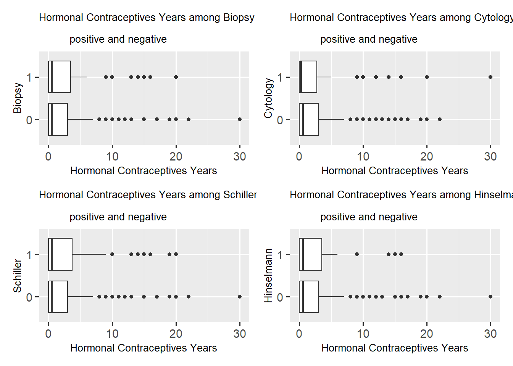
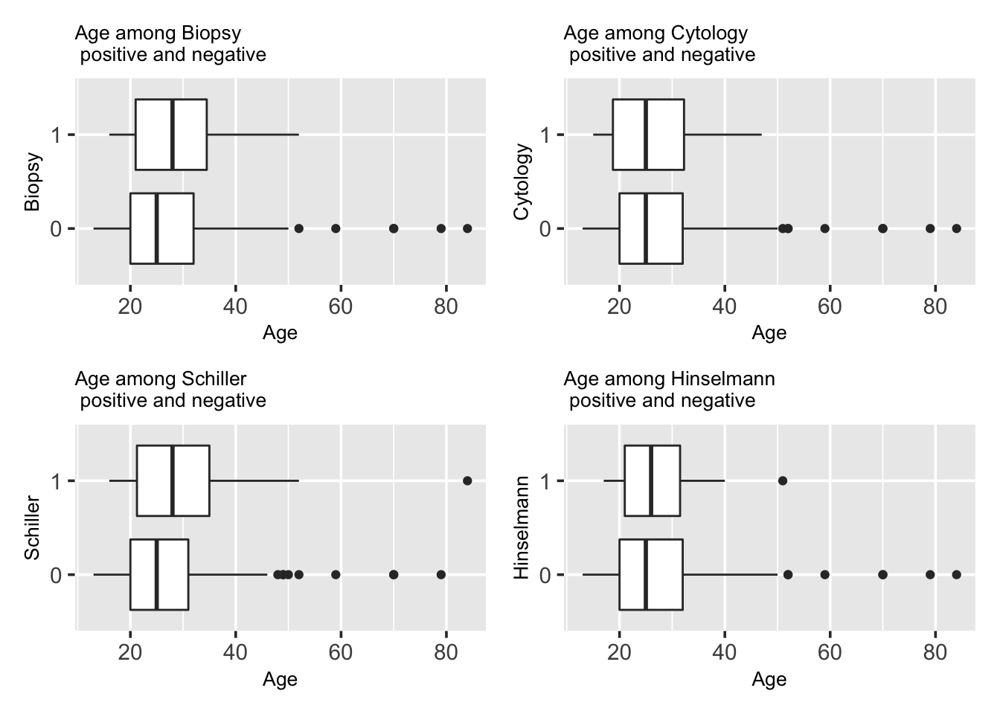

Chapter 5 Results
5.1 Age
Many cancer diseases relate with age, that older people have higher risks. Is this consistent for cervical cancer in this data set?

5.2 Number of Sexual Partners
Does number of sexual partners relate with cervical cancer? How do the 4 different ways of disease diagnosis show differences?

5.3 First sexual intercourse (age)
Does first sexual intercourse time correlate with cervical cancer?

5.4 Num of pregnancies
Pregnancy and giving birth affects cervical tissue in many ways. Would number of pregnancy relate to cervical cancer chances?

5.5 Smoking
Smoking is related to many diseases and is seen as one of the most common factors to severe diseases including lung cancer and hear diseases. Does smoking relates to Cervical Cancer as well?
A mosaic plot between boolean variables smoking and biopsy results.

Smoke years times Smoke packs per year to calculate total packs of cigarettes smoked. Investigate the relation with cervical cancer.

5.6 Hormonal Contraceptives
Hormonal Contraceptives are birth control methods, considered as safe and reliable ways to prevent pregnancy for most people. Would Hormonal Contraceptives be a factor for cervical cancer?
A mosaic plot between boolean variables Hormonal Contraceptives and biopsy results.

We investigate further on number of years of using Hormonal Contraceptives and its relation with cervical cancer.
5.7 IUD
An IUD is a tiny device that’s put into one’s uterus to prevent pregnancy. It’s long-term, reversible, and one of the most effective birth control methods. However, it is an extremely painful process and would make periods become heavier, more painful and longer. Question here would be if IUD relates with cervical cancer.
A mosaic plot between boolean variables IUD and biopsy results.

We investigate further on number of years of using IUD and its relation with cervical cancer.
5.8 STDs
Sexually transmitted diseases (STDs), or sexually transmitted infections (STIs), are infections that are passed from one person to another through sexual contact. How does STDs relate to cervical cancer? Is it a possible factor?
A mosaic plot between boolean variables STD and biopsy results.
We then check if STD number correlates with cervical cancer.

We would then look into a collection of different STDs and their correlation with cervical cancers.
TODO!!!!!!!!!!